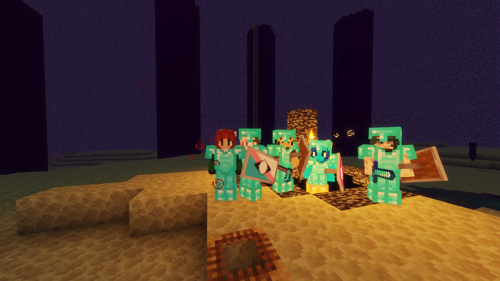
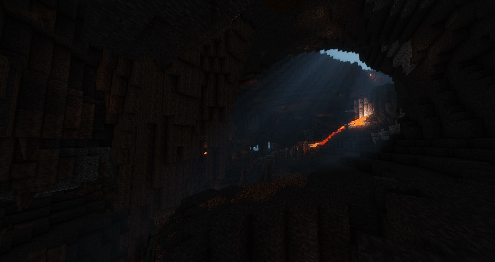
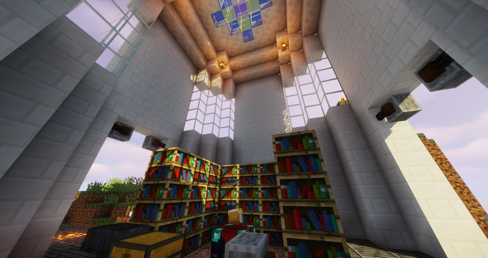
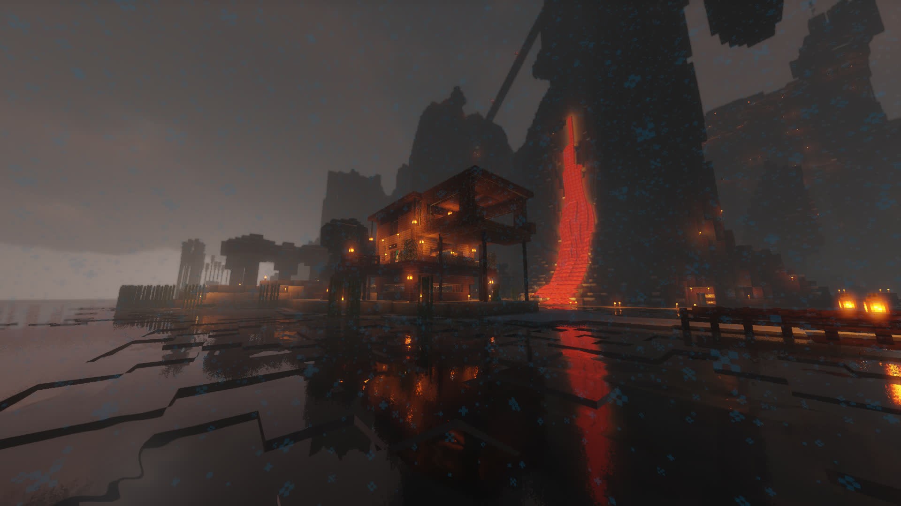
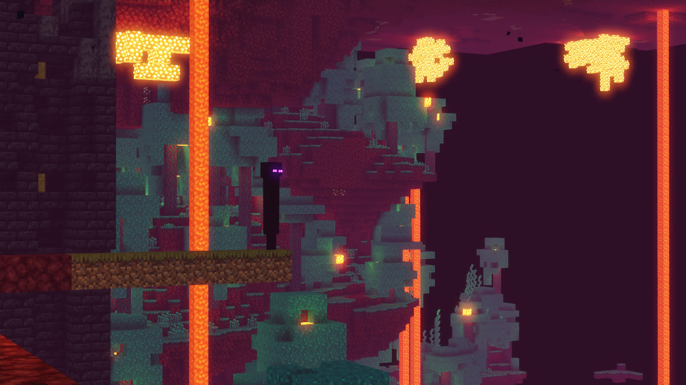
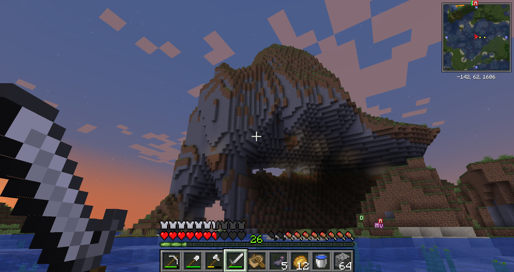
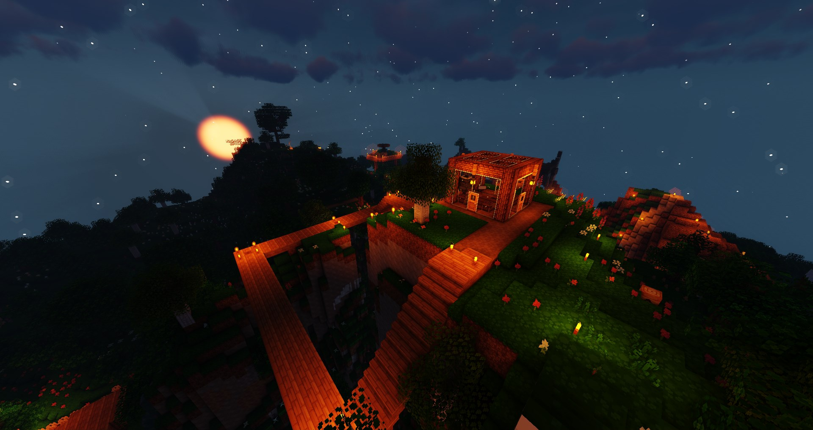
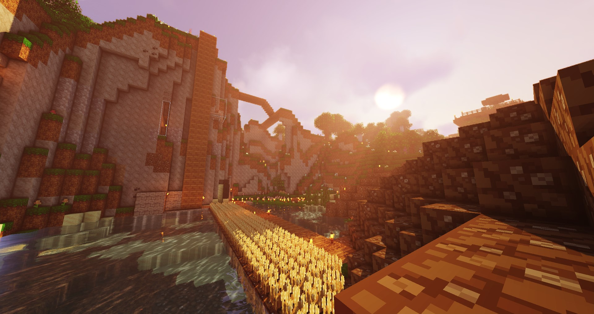
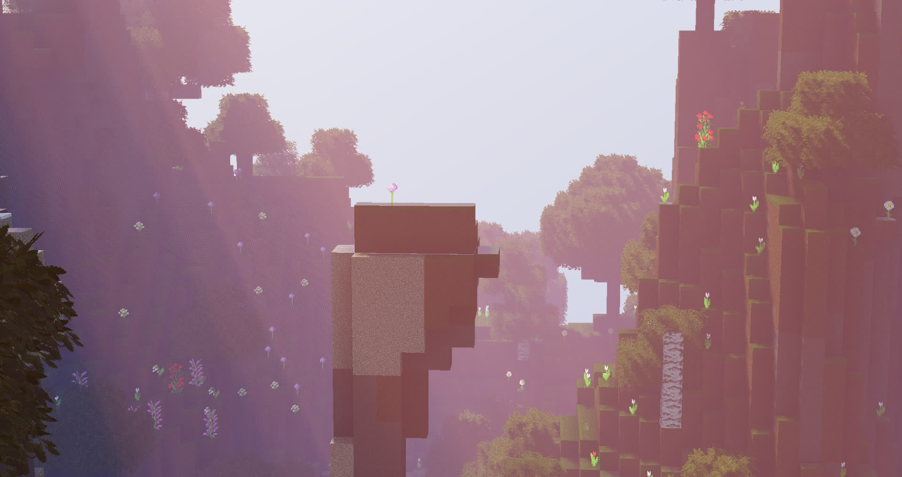

Here you will find a list of every previous server that's been hosted, along with a download of the last map backup before it was closed, and a gallery of screenshots/maps from that server.
If you had played during any of these versions and have screenshots you'd like to add, let me know! (This is Violet, in case that wasn't clear)
Post-Ender Dragon Battle (from Mar)Inside of Exposed Cave at Night (from Violet)The Altuo Conservatory (from Violet)Mar's Beach House at Night in the Snow (from Mar)Rodanthe Lighthouse at Night in the Rain (from Mar)Enderman Standing on a Ledge in the Nether (from Mar)Large Mountain-like Formation Above the Water at Sunrise (from Desu)
BCRMC 2 - 1.16: The Nether Update (Apr. 2020)
Gallery
Violet's House at Night (from Violet)Town Valley at Daytime (from Violet)Allium on a Rock Formation at Daytime (from Violet)